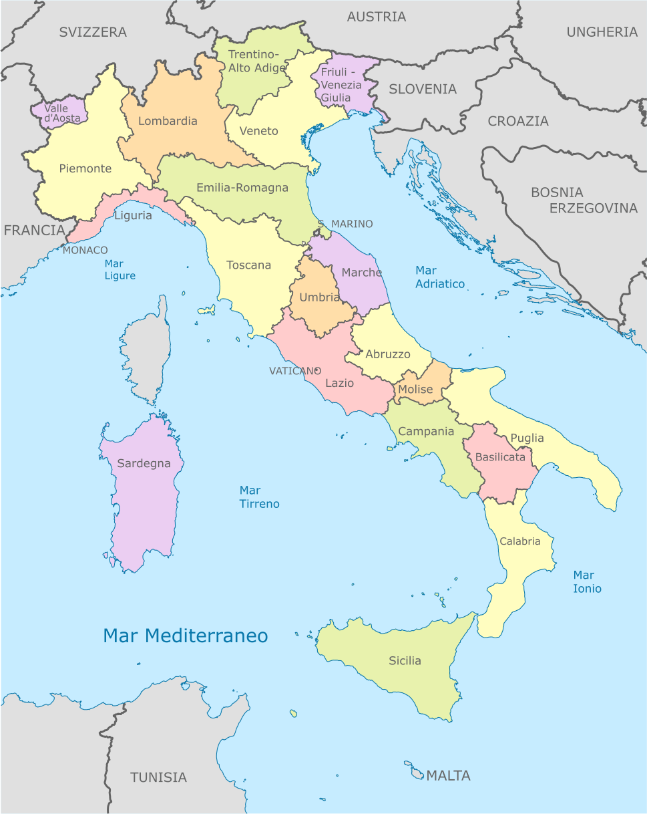
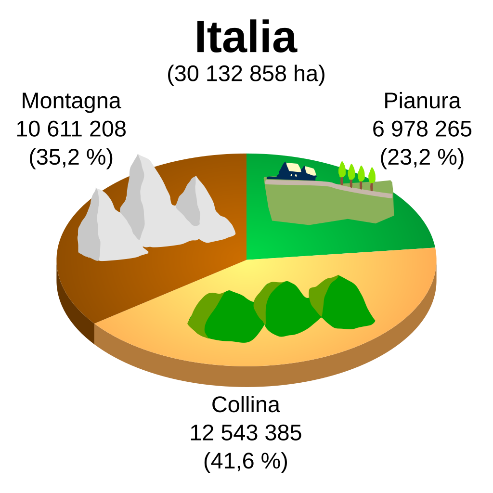
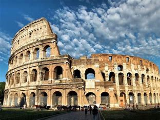
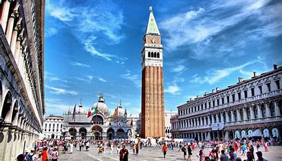

Italia

Geograficamente l'Italia è suddivisa in tre parti:l'Italia continentale, tra le Alpi e l'istmo La Spezia-Rimini, l'Italia peninsulare, che si estende a sud di tale istmo allungandosi nel Mediterraneo da nord-ovest a sud-est, e l'Italia insulare, che comprende le due maggiori isole del Mediterraneo, la Sardegna e la Sicilia.
I confini politici attuali si estendono complessivamente per 1800 chilometri[5] confinando ad ovest con la Francia, a nord con la Svizzera e l'Austria e ad est con la Slovenia; i microstati San Marino e Città del Vaticano.
L'Italia presenta una prevalenza di zone collinari (il 41,6% del territorio) rispetto a zone montuose (il 35,2% del territorio), o a zone pianeggianti (23,2%).

posti da andare a visitare
- i posti da andare a visitare a Roma sono il collosseo Il Colosseo, originariamente conosciuto come Anfiteatro Flavio (in latino Amphitheatrum Flavium) o semplicemente Amphitheatrum (in italiano Anfiteatro), è il più grande anfiteatro romano del mondo (in grado di contenere un numero di spettatori stimato tra 50 000 e 87 000), situato nel centro della città di Roma. È il più importante anfiteatro romano, nonché il più imponente monumento dell'antica Roma che sia giunto fino a noi.Inserito nel 1980 nella lista dei Patrimoni dell'umanità dell'UNESCO - insieme all'intero Centro storico di Roma, alle Zone extraterritoriali della Santa Sede in Italia e alla Basilica di San Paolo fuori le mura - nel 2007, unico monumento europeo, è stato anche inserito fra le Nuove sette meraviglie del mondo a seguito di un concorso organizzato da New Open World Corporation (NOWC).
L'anfiteatro fu edificato in epoca flavia su un'area al limite orientale del Foro Romano. La sua costruzione, iniziata da Vespasiano nel 70 d.C., fu conclusa da Tito, che lo inaugurò il 21 aprile nell'80 d.C. Ulteriori modifiche vennero apportate durante l'impero di Domiziano, nel 90 d.C. L'edificio forma un ovale policentrico di 527 m di perimetro, con assi che misurano 187,5 e 156,5 m. L'arena all'interno misura 86 × 54 m, con una superficie di 3357 m².[4] L'altezza attuale raggiunge 48 m, ma originariamente arrivava a 52 m. La struttura esprime con chiarezza le concezioni architettoniche e costruttive romane della prima Età imperiale, basate rispettivamente sulla linea curva e avvolgente offerta dalla pianta ellittica e sulla complessità dei sistemi costruttivi. Archi e volte sono concatenati tra loro in un serrato rapporto strutturale.

- Venezia anche detta città del amore. La Piazza propriamente detta, cioè la zona racchiusa tra le Procuratie vecchie e nuove e quelle "nuovissime", presenta uno sviluppo architettonico di rara suggestione sul complesso monumentale dell'omonima basilica e l'appena prospiciente, svettante, campanile di San Marco. La Basilica prospetta sulla piazza con una facciata marmorea che risale al XIII secolo, in cui furono inseriti mosaici, bassorilievi ed una grande quantità di materiale di spoglio eterogeneo. Ciò diede la caratteristica policromia, che si combina con i complessi effetti di chiaroscuro dovuti alle multiformi aperture ed al gioco dei volumi. Le due porte di ingresso alle estremità (quella meridionale, dedicata a san Clemente, risalente all'XI secolo e quella centrale a quello successivo) vennero realizzate con timpani ad arco inflesso, di ispirazione araba, forse volute anche per ricordare Alessandria d'Egitto, dove era avvenuto il martirio dell'evangelista Marco. Le porte minori sono successive, realizzate in gusto antico. L'unico mosaico originale delle lunette della facciata è quello sopra al primo portale a sinistra: gli altri risalgono al XVII e al XIX secolo e imitano i soggetti di quelli che andarono a sostituire.

torna alla home
sittografia